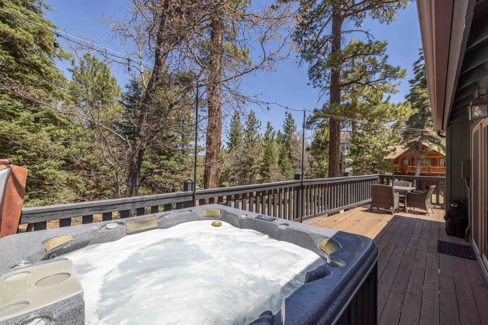

Pine Grove Cabin sits in the upper Moonridge area of Big Bear Lake — a quieter, pine-covered pocket close to Bear Mountain, not the busier Village strip along the water.

Big Bear Lake covers a lot of ground, and Moonridge is its own pocket — up in the pines above the lake, closer to Bear Mountain Resort and the Alpine Zoo than to the restaurants and shops of the Village strip along the water. It's a quieter base: fewer crowds, more forest, and a short drive down to the lake or the Village when you want them.
A 3.2-mile loop within walking distance of the cabin — head up Columbine, turn left on Yosemite to the dead end. Good for all skill levels.
Moderate difficulty, with standout views over Big Bear Lake.
World-class skiing and snowboarding in winter, mountain biking and scenic lifts in summer.
Home to native California wildlife including bears, mountain lions, and birds of prey.
Alpine slide, mineshaft coaster, and more — a local family favorite.
Ziplining and Segway tours in Big Bear Lake.
A few local favorites, straight from our own guest guidebook.
Hand-pressed burgers, poke bowls, steaks, and live music. Kid and dog friendly.
The classic Big Bear breakfast spot. Expect a weekend line — worth it.
Solid pizza in the heart of the Village.
Creative, Hawaiian-inspired comfort food in a rockin' setting.
Family owned for over 25 years — a local favorite for bikers, skiers, and hikers, with nightly karaoke.
A hidden gem for craft brews and wine.
Pine Grove Cabin operates under active San Bernardino County STR Permit CESTRP-2021-00256, with a maximum overnight occupancy of 7 guests and 3 vehicles. A signed rental agreement is required before a booking request is approved, and it's sent immediately upon request.
Skiing and snow play at Bear Mountain. Sleds are provided at the cabin. Roads can require chains — check conditions before driving up.
Cooler than the valley below, with hiking, mountain biking, and lake access. The cabin has no A/C, but Moonridge evenings rarely need it.
The shoulder seasons are quieter and cheaper, with fall color and fewer crowds around the Alpine Zoo and Bear Mountain trails.
Pine Grove Cabin sits at 7,400 ft. Take it easy your first day, especially with hiking or the hot tub — the altitude sneaks up on you. Stay hydrated.
Download offline maps before heading out for the day.
Even in summer. Pack a layer for after sunset.
Check Caltrans QuickMap before you drive up — Hwy 18 and Hwy 38 conditions change quickly.
We're Derek and Erica, based in Orange County. Like a lot of busy families, life moves fast at home — Big Bear is where we slow down, and we've stocked Pine Grove Cabin with everything we'd want as guests ourselves. If anything isn't right during your stay, you're messaging the actual owners, not a call center.
Pine Grove Cabin sleeps 7, with a hot tub, the Sasquatch Den, and a wraparound deck close to Bear Mountain and the Alpine Zoo.
Check availability